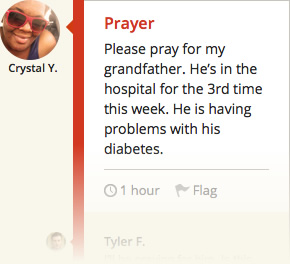
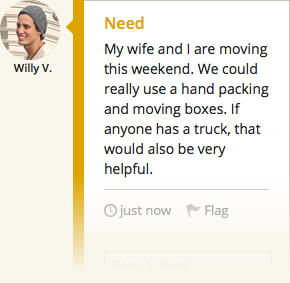
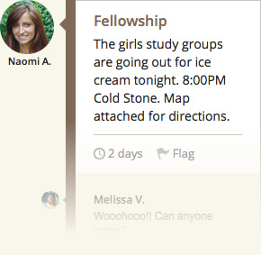
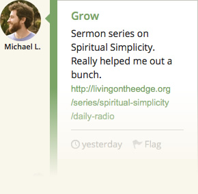
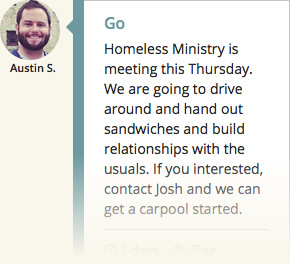
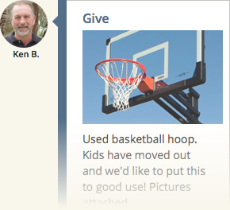

Fellowship Feed is an easy-to-use app to empower communication & purpose in small church groups
This Project has been made, "For the Church, By the Church"
Stay connected with Your Small-Group!
Share requests, praises, and encourage one another in prayer

Reach out to your group with your needs & the needs of others

Organize fellowship with your community all in 1 easy place

Encourage each other to grow by sharing scripture and resources

Organize and mobalize evangelical ministries or meetups

Share resources, posessions, and gifts with your community

Everyone communicates differently.
Email, Facebook, Twitter, SMS, or Mobile App. You should pick! FF won’t force you to communicate a certain way. Go Ahead, choose how you’d prefer your small group members to reach out to you.
Useful tools to equip comunities
Promote job leads and other opportunities
Quickly gather needed help for service projects
Attach Photos, Links, Locations, and Events
Be Spontanius! Reach your entire group in seconds
Use FF on All Your Favorite Devices
Fellowship Feed is available through your Computer's Web Browser, or iPhone / Android app. All you’ll need is a PC, Tablet, or Smartphone with internet to access the app.